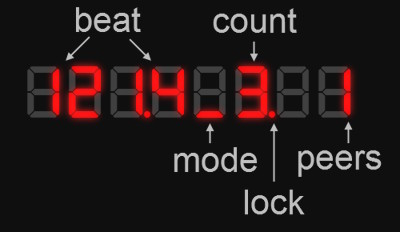

tapbox
Ableton Link sync for the DJ booth.
Tap the beat, let the mic track it, or lock straight to your CDJ — tapbox keeps every Link device on the grid, all night.
Ableton Link sync for the DJ booth.
Tap the beat, let the mic track it, or lock straight to your CDJ — tapbox keeps every Link device on the grid, all night.
No software needed — Chrome or Edge, plug in, done.
Passively reads Pioneer Pro DJ Link beat packets off your network and feeds the CDJ tempo straight into Ableton Link — no tapping, no latency.
An INMP441 microphone listens to the room and tracks the tempo automatically. You tap the downbeat once — the mic does the rest.
Classic four-tap tempo with phase-aligned Link sync. Each tap refines the BPM; the downbeat locks on the first tap.
Ethernet-first with automatic WiFi failover. Joins your Ableton Link session instantly on boot. DHCP or static IP.
UDP server on port 8000. Remote tap, set BPM, nudge phase, or reset the downbeat from any OSC-capable device.
Hold both buttons in the menu for 3 seconds. tapbox downloads and installs the latest firmware over the network — no USB needed.
